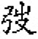

越客
六月二十九日的《自由谈》里，唐弢[51]先生曾经讲到浙东的堕民，并且据《堕民猥谈》[52]之说，以为是宋将焦光瓒的部属，因为降金，为时人所不齿，至明太祖[53]，乃榜其门曰“丐户”，此后他们遂在悲苦和被人轻蔑的环境下过着日子。
我生于绍兴，堕民是幼小时候所常见的人，也从父老的口头，听到过同样的他们所以成为堕民的缘起。但后来我怀疑了。因为我想，明太祖对于元朝，尚且不肯放肆[54]，他是决不会来管隔一朝代的降金的宋将的；况且看他们的职业，分明还有“教坊”或“乐户”[55]的余痕，所以他们的祖先，倒是明初的反抗洪武和永乐皇帝的忠臣义士[56]也说不定。还有一层，是好人的子孙会吃苦，卖国者的子孙却未必变成堕民的，举出最近便的例子来，则岳飞[57]的后裔还在杭州看守岳王坟，可是过着很穷苦悲惨的生活，然而秦桧，严嵩[58]……的后人呢？……
不过我现在并不想翻这样的陈年账。我只要说，在绍兴的堕民，是一种已经解放了的奴才，这解放就在雍正年间罢[59]，也说不定。所以他们是已经都有别的职业的了，自然是贱业。男人们是收旧货，卖鸡毛，捉青蛙，做戏；女的则每逢过年过节，到她所认为主人的家里去道喜，有庆吊事情就帮忙，在这里还留着奴才的皮毛，但事毕便走，而且有颇多的犒赏，就可见是曾经解放过的了。
每一家堕民所走的主人家是有一定的，不能随便走；婆婆死了，就使儿媳妇去，传给后代，恰如遗产的一般；必须非常贫穷，将走动的权利卖给了别人，这才和旧主人断绝了关系。假使你无端叫她不要来了，那就是等于给与她重大的侮辱。我还记得民国革命之后，我的母亲曾对一个堕民的女人说，“以后我们都一样了，你们可以不要来了。”不料她却勃然变色，愤愤的回答道：“你说的是什么话？……我们是千年万代，要走下去的！”
就是为了一点点犒赏，不但安于做奴才，而且还要做更广泛的奴才，还得出钱去买做奴才的权利，这是堕民以外的自由人所万想不到的罢。
七月三日。
注 释
[50] 本篇最初发表于1933年7月6日《申报·自由谈》。
[51] 唐

（1913—1992） 浙江镇海人，作家。著有杂文集《推背集》、《短长书》等。他曾在1933年6月29日《申报·自由谈》发表《堕民》一文，其中有“辱国者的子孙作堕民，卖国的汉奸如果有子孙的话，至少也将是一种堕民”的话。[52] 《堕民猥谈》 应作《堕民猥编》，作者不详。清代钱大昕编纂的《鄞县志》中，曾引录该书关于堕民的记载：“堕民，谓之丐户，……相传为宋罪俘之遗，故摈之。丐自言则云宋将焦光赞部落，以叛宋投金故被斥。……元人名为怯怜户，明太祖定户籍，扁其门曰丐。……男子则捕蛙，卖饧……立冬打鬼，胡花帽鬼脸，钟鼓戏剧，种种沿门需索。其妇人则为人家拗发髻，剃妇面毛，习媒妁，伴良家新娶妇，梳发为髢。”（卷一《风俗》）
[53] 明太祖 即朱元璋（1328—1398），濠州钟离（今安徽凤阳）人，元末农民起义领袖之一。1368年推翻元朝统治，建立明王朝，改元洪武，庙号太祖。
[54] 明太祖对于元朝，尚且不肯放肆 明初对待元朝残余势力实行剿抚兼施政策，据《明史·太祖本纪》载：洪武三年（1370）五月，武将李文忠攻克应昌（今内蒙古自治区克什克腾旗），生擒元帝之子买的里八剌。六月，买的里八剌至京师，群臣请“献俘”，明太祖不许，并封买的里八剌为崇礼侯。同时又因为李文忠的捷报过于夸耀，对宰相说：“元主中国百年，朕与卿等父母，皆赖其生养，奈何为此浮薄之言，亟改之。”洪武七年九月，又把买的里八剌放回；十一年四月，元主爱猷识理达腊死，明太祖于六月遣使致祭。鲁迅所说明太祖对元朝“不肯放肆”，大概指的这类事情。
[55] “教坊” 唐代开始设立的掌管教练女乐的机构。“乐户”，封建时代罪人妻女被编入乐籍者，其名称最早见于《魏书·刑罚志》。两者实际都是官妓，相沿到清代雍正年间才废止。
[56] 反抗永乐皇帝的忠臣义士，有齐泰、景清、铁弦、方孝孺等人。朱元璋死后，由皇太孙朱允炆继位，即建文帝；不久，他的叔父燕王朱棣起兵夺取帝位，即永乐帝。当时齐泰、景清等人效忠建文反抗永乐，他们的妻子儿女及族人多同遭杀戮或被贬为奴（但未见到贬为堕民的明确记载）。反抗洪武（明太祖）的忠臣义士，未知何指。
[57] 岳飞（1103—1142） 字鹏举，相州汤阴（今属河南）人，南宋名将。因坚持抗击金兵而被主降派宋高宗、秦桧杀害。岳飞被害后，初被偷偷草葬于杭州钱塘门外荒塚中，宋孝宗时改葬于杭州西湖西北岸。
[58] 秦桧（1090—1155） 字会之，江宁（今南京）人，北宋钦宗时任御史中丞，靖康间被金兵俘虏，得金主信任，不久纵归；南宋高宗时任宰相，是主张降金的内奸，杀害岳飞的主谋。严嵩（1480—1567），字惟中，江西分宜人。明弘治进士，世宗时官至华盖殿大学士、太子太师、内阁首辅，横行济恶，构杀朝臣，是专权祸国的权奸。
[59] 据清代蒋良骐《东华录》载：雍正元年（1723）九月“除浙江绍兴府堕民丐籍”。